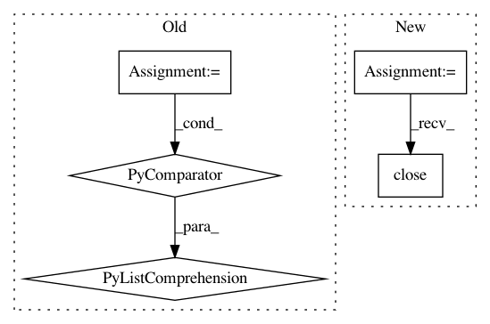

d6cfffd01a2a3129739c6e76f9d966287b20b7c5,bin/basenji_predict.py,,main,#,40
Before Change
target_means_median = np.median(target_means)
target_means /= target_means_median
norm_out = open("%s/normalization.txt" % options.out_dir, "w")
print("\n".join([str(tu) for tu in target_means]), file=norm_out)
norm_out.close()
After Change
sess.run(test_init_op)
test_preds = model.predict_tfr(sess, sample=options.sample_down)
preds_h5 = h5py.File("%s/preds.h5" % options.out_dir, "w")
preds_h5.create_dataset("preds", data=test_preds)
preds_h5.close()
// print normalization factors
target_means = test_preds.mean(axis=(0,1), dtype="float64")
target_means_median = np.median(target_means)
In pattern: SUPERPATTERN
Frequency: 3
Non-data size: 5
Instances
Project Name: calico/basenji
Commit Name: d6cfffd01a2a3129739c6e76f9d966287b20b7c5
Time: 2019-04-12
Author: drk@calicolabs.com
File Name: bin/basenji_predict.py
Class Name:
Method Name: main
Project Name: HazyResearch/fonduer
Commit Name: 6ca60969b6893268680d4386e2f22cdc3bc3c405
Time: 2018-09-05
Author: jrausch@inf.ethz.ch
File Name: src/fonduer/utils/udf.py
Class Name: UDFRunner
Method Name: apply_mt
Project Name: openeventdata/mordecai
Commit Name: 05572c0e31b9354e6b0fd4435b65b81da1b3f188
Time: 2017-12-13
Author: ahalterman0@gmail.com
File Name: mordecai/geoparse.py
Class Name: Geoparser
Method Name: batch_geoparse